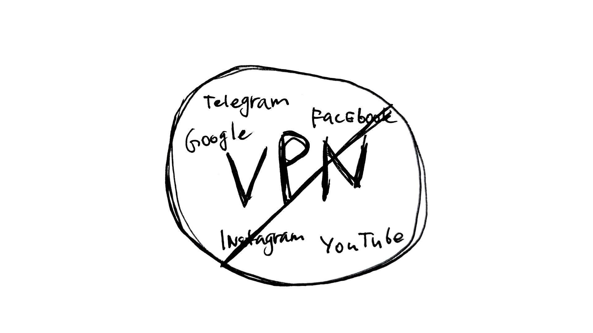

Про блокировки Telegram и VPN в РФ
Животрепещущая тема: блокировки!
Телегу обещали 1 апреля заблокировать, но воз и ныне там. Уж не знаю связано ли это с тем, что работающий-даже-на-парковке уже второй раз за 3 дня лежит.
Да и кружочки, улетающие чужим людям, уже стали мемом. Имею ощущение, что это внутренняя диверсия. Так что вполне возможно в рядах разработчиков Макса тоже есть фронт сопоставления.
И вот я начинаю достаточно массово видеть посты у "патриотических" блогеров, что блокировка вэпээн ударит по отечественной айти отрасли (что правда). Скину экземпляр в комментарии.
Есть интересные посты, развеивающие миф о том, что "а что такого, строят систему как в Китае". Тоже кину в комментарии, очень рекомендую прочесть.
И так же вижу посты, комментарии и рилсы, что якобы по слухам "Путин отчитал отвечающих за блокировки". Короче, как обычно "царь хороший, бояре плохие". В связи с этим бытует мнение, что блокировки - это заговор по дискредитации президента с целью свергнуть его. Тоже скину пример в комментарии.
Воспринимать эти вещи можно по-разному. Либо "Кремлёвские башни борятся", либо "поняли, что облажались и начинают прогрев на откат блокировок".
Но так или иначе, в результате блокировок и насильного загона в сырой Макс даже Z-аудитория начала терять веру в правильность линии партии, и половина населения научилась пользоваться VPN. А кто готовился к более серьёзным блокировкам, перешёл с телеги на более защищённые и стойкие к блокировкам мессенджеры типа Element, SimpleX, Delta Chat, и даже "месседжеры судного дня" Briar с Bitchat.
Как не вспомнить историю с Александром III, который в 1881 запретил политические собрания, усилил цензуру и надзор. А студенты научились методам конспирации, обнаружению слежки, уходу от неё и прочим навыкам "агентурной работы". И эти навыки пришлись очень кстати спустя 30-40 лет во время революции.
Так что вот вам очередная версия что происходит: заговор против президента реален и население готовят к революции. Го обсуждать в комменты!